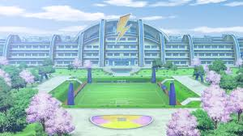

🌞 Mode clair
📺 InazumaTV
Inazuma Eleven Fan Site
Galerie
Présentation
Personnages
Galerie

Présentation
Inazuma Eleven est un anime mêlant football, stratégie et techniques spectaculaires.
👥 Personnages
⚽ Mark Evans
🔥 Axel Blaze
🧠 Jude Sharp